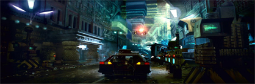

About Me
Background
Education
Aspirations
My name is Robert Alberto. I was born in the Dominican Republic in a small town called Bonao. I am the first of three children. In December 2013, at the age of 21, I emigrated to the United States. I live with my parents and younger brother in Belleville, New Jersey. I speak Spanish as my mother language and English as my second language. I am also fluent in French and I know basic Russian. I describe myself as a highly dedicated student with an implacable hunger for knowledge. The topics that interest me the most are computers, politics, religion, and philosophy.
I attended highschool in the Dominican Republic and graduated with honors from the technical highschool Politecnico Ing. Jose Delio Guzman. I attended the local university under the industrial engineering program but dropped out after the second semester due to financial issues. After arriving to the united states I decided to continue my education and enrolled in Passaic County Community College in the Information Technology department. I completed my associates degree from PCCC in summer 2017 and enrolled in the New jersey Institute of Technology in the Computer Technology program. I expect to complete my Bachelors by may 2019.
After completing my bachelor degree I plan to find a job in the Networking field. Eventually, I will pursue a master degree In cybersecurity. After finishing my masters, I want to enhance my knowledge the Russian language so I can start learning Chinese. Additionally, I plan on teaching networking, Linux, and computer forensics because they are my favorite topics to learn about.
Hobbies
Raspberry Pi DIY Projects
- Arcade Machine
- Portable VPN server
- Portable penetration testing machine
- Portable super Nintendo entertainment system
- Calibre library server
- Plex and Kodi media server
- The raspberry pi surveillance system
- Network ad blocker
Cooking
- Sancocho
- Rice beens and meat
- Mofongo
- Locrio
- Pastelon
- Rice and green beans
Foreign Language Learning
A Raspberry Pi is a credit-card sized single-board computer developed by the Raspberry Pi Foundation in the United Kingdom. The Raspberry Pi uses an ARM processor and it serves as an empty computer capable of doing anything. The main goal behind the creation of the Raspberry Pi brings the wonders of computer science to schools in developing countries. This fully functional computer only cost $39 USD and can be purchased in many online retailers like Amazon.com and general computer stores like Microcenter. I started working with the Raspberry Pi when I stepped across a video on youtube of a guy that builds his own arcade machine. I have always been a fan of vintage arcade video games so I bought a raspberry pi. Since then, I buy DIY books for the raspberry pi and watch videos for projects. Here is a list of projects that I plan to work on:
I learned how to cook when I was 11 years old. Since then I enjoy preparing new meals and tasting new food. The more I cook the better I get at it. So far, I can cook almost all the dishes that can be found in the Dominican cuisine. I believe that once you learn how to season, you can cook. Although it sounds silly, the most difficult part of cooking is seasoning. Any one can follow instructions in a book, but not everyone can alter the instructions to make the dish unique. The dishes that I like to cook the most are:
My first language is Spanish which is the official language of the Dominican Republic. My fascination for foreign language started at an early age. My father used to play English and French music all the time and naturally I developed a taste for this music. I started studying English at the age of 11 in a private institution in my home town. After 4 years I graduated from that school which offered me the opportunity to start teaching the English language to little kids. This experience solidified my fascination with languages even more because at the age of 16 I started learning French at the same institution I was working. Currently, I am learning Russian and hopefully I will be able to master it soon.
Other Interests
Anime
Anime is a Japanese style of cartoon animation. The word anime is the Japanese term for animation which is used in japan to refer to any form of animated artwork. The first anime that I watch is called Dragon Ball and it follows the adventures of a young boy named Son Goku. There are too many different genre of anime, however, the anime that I prefer involve philosophical thinking. One of my favorite is Tokyo Ghoul which develops around the question What makes something good?
Music
I love music. I listen to music from the moment I wake up to the moment I go to sleep. I cannot avoid singing the songs I like although I am pretty bad at singing. My favorite music genre is rock, although I enjoy others as well. I like rock because I like complicated music. I do not have a favorite singer because I like to treat each song as a story of its own. I believe that if a song is good, the performer will be just fine. On the other hand, I do have favorite songs from specific singers. For example, I believe Black Sabbath best song is War Pigs
Sci-Fi Movies
Science fiction (sci-fi) is a genre of speculative fiction that centers in futuristic technology, space travel, time travel, parallel universes, and extraterrestrial life. I love sci-fi because it portrays the ways in which science can back fire and how humanity still survives I became a fan of Sci-Fi movies fan when I saw the first entrance of Alien by Ridley Scott. My favorite Sci-Fi movies are:
- Blade Runner
- I, Robot
- Alien
- Predator
- 12 Monkeys
- Daybreakers
- I Am Legend
- Men In Black
- Back To The Future
- A Wind Named Amnesia
- Terminator
- Jurassic Park
- Ghost In The Shell
- Resident Evil